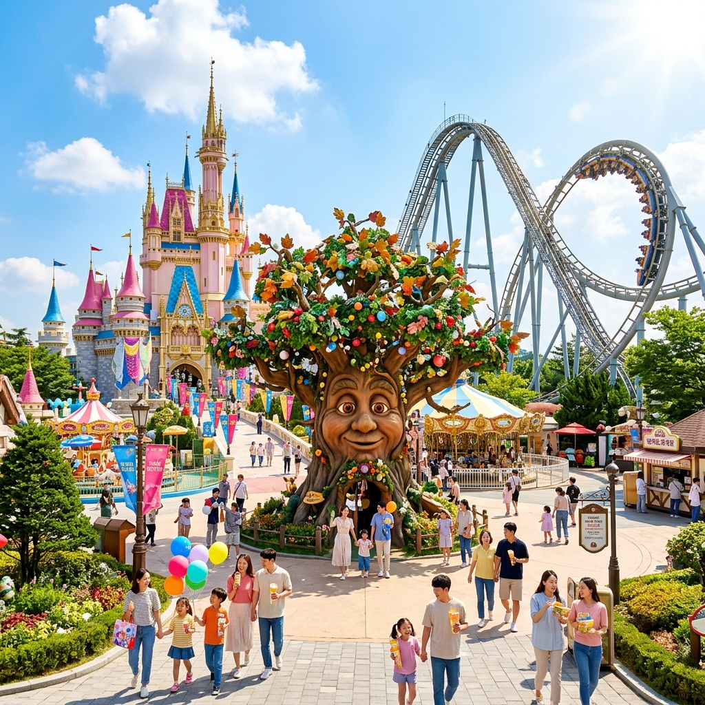
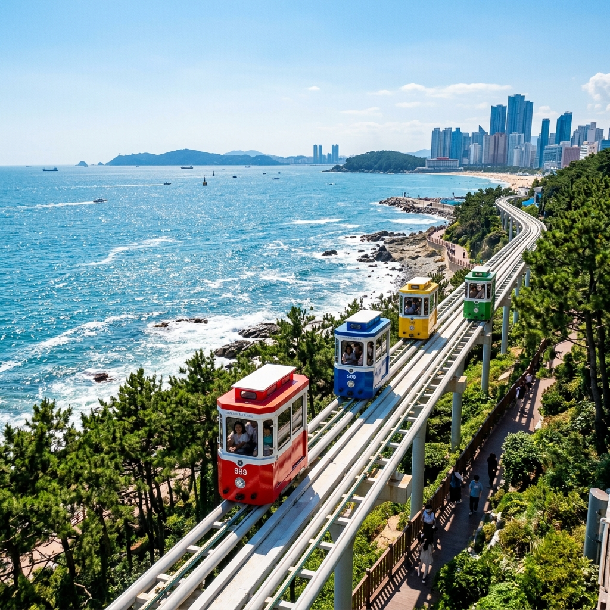

行程時間表
09:30 - 11:30
Skyline Luge 斜坡滑車 VBP 續用
早上出發前往機張區！靠著 VBP 玩好玩滿，全家體驗卡丁車般的下坡快感，安全又刺激，保證每個人的笑容都停不下來。
11:45 - 13:00
午餐｜Lotte Outlet 美食街或機張韓牛
就近於 Lotte Outlet 裡解決或是選擇當地特產機張韓牛，完美銜接想單純「吃牛肉」與「吃辣」的各種任性需求。
13:00 - 15:30
樂天世界分流大作戰 VBP 續用
🎢 瘋玩組 (你＆老婆＆女兒)
憑著 VBP，我們衝進「釜山樂天世界魔法森林」，暢玩各種歡樂遊樂設施、看遊行，大人小孩一起徹底釋放童心！
☕ 悠閒逛街組 (媽媽＆舅媽)
媽媽和舅媽可以在旁邊的 Lotte Outlet 慢慢逛街挖寶，或者找間涼爽的室內咖啡廳喝下午茶，享受自己的悠閒時光～

16:30 - 18:00
天空膠囊小火車與海岸列車
前往尾浦站大會師！安排 4 人乘坐自費的「天空膠囊小火車」，懸在空中慢慢欣賞無敵海景；而這時可推派 1 人利用 VBP 搭乘下方的「海岸列車」前行。最後全家在「青沙浦」站歡喜會合。

18:30 - 20:00
20:30
洗衣任務
返回海雲台的飯店，今晚還有一個秘密任務：用套房裡的洗衣機把前幾天累積的髒衣服一次洗乾淨，帶一身清爽回家！
📌 貼心小提醒
膠囊小火車超熱門，記得出發前兩到三週就先上官網搶票！玩 Luge 滑車時穿好走的包鞋，裙子不太方便記得換褲裝。今晚回飯店有洗衣任務，大家把要洗的衣服都丟出來一起洗，明天就能穿乾淨衣服繼續玩啦～